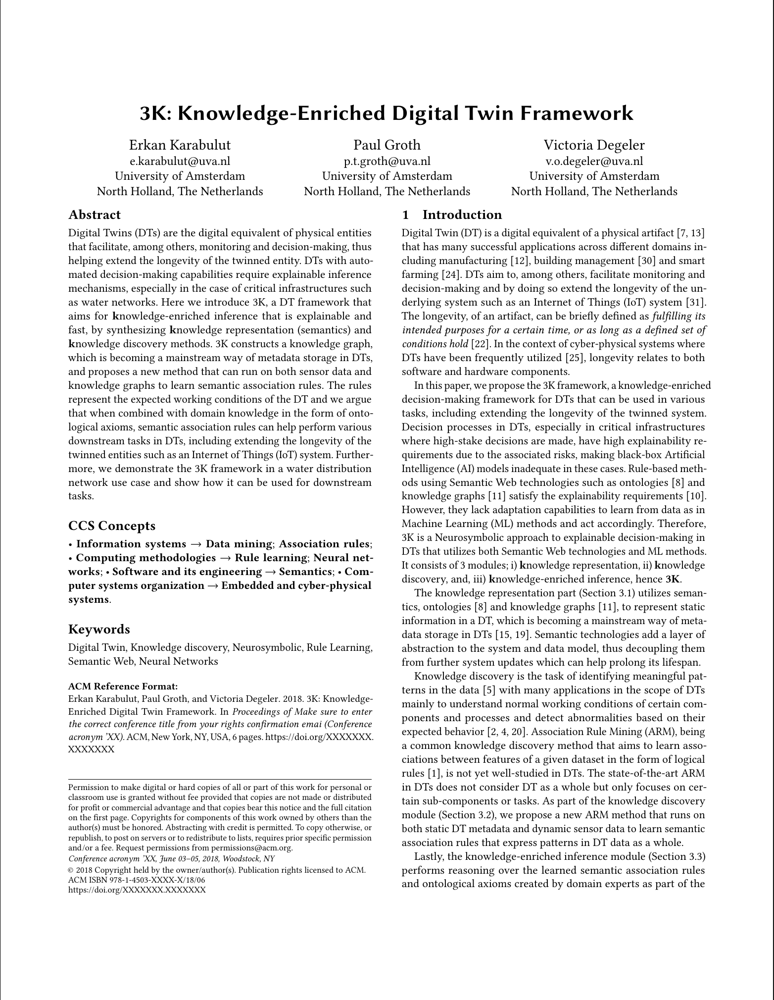
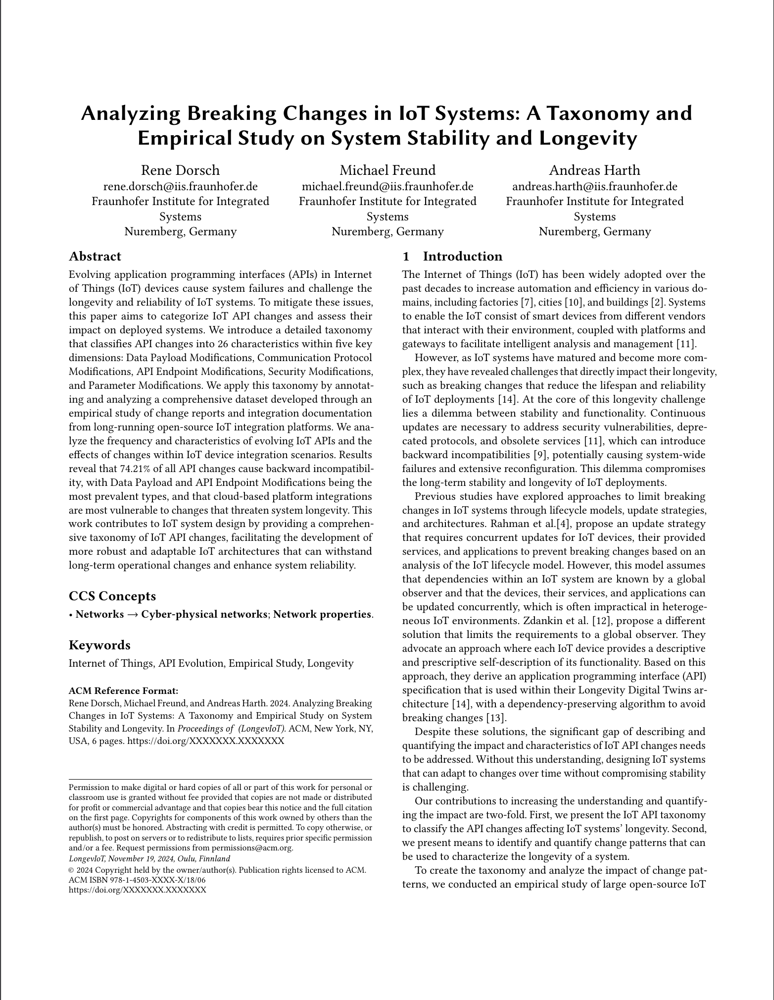
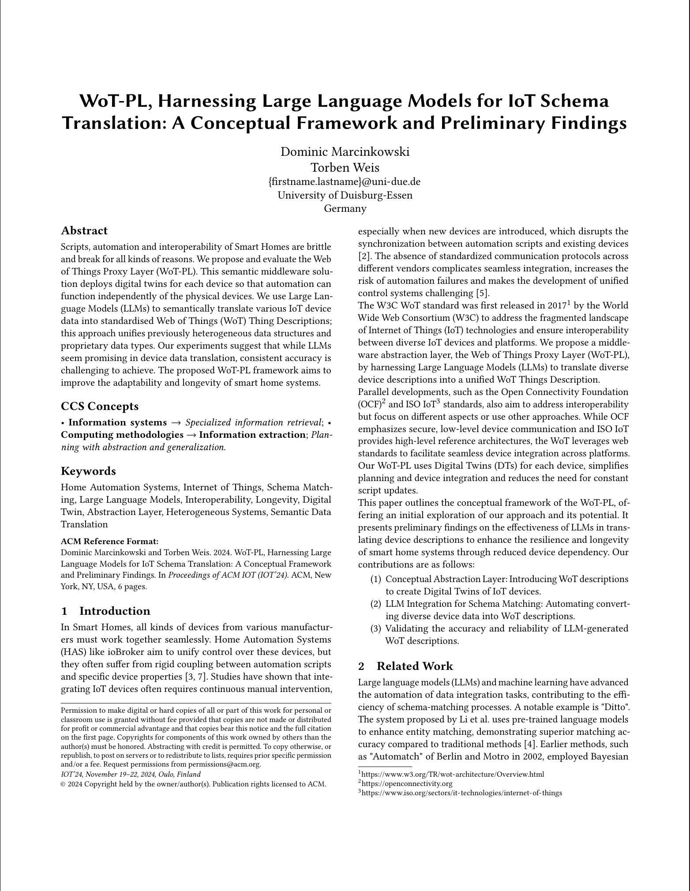

ABOUT
The premature aging of IoT systems is one of the most challenging topics that need to be addressed to enable widespread usage. Both hardware and the software that is deployed on devices from small sensor nodes to edge devices or the cloud need to be considered holistically, such that deployment lifetimes can be counted in decades not years. With ever changing communication protocols, company-specific software platforms and quickly deprecated hardware components, IoT is at the forefront of uncertain futures, and these technical challenges need to be solved for a sustainable future. In this workshop, we focus on issues arising from the brittle nature of current IoT systems.
CALL FOR PAPERS
The papers of this workshop should highlight approaches, ideas, and concepts in the field of longevity of Internet of Things systems. The main outcome of the workshop is to share the current progress in research and industry, as well as establish a community, dedicated to improve the longevity and sustainability of IoT systems.
The main topics of interests include (but are not limited to):
- Aging AI models
- Software update planning
- Abstractions and Digital Twins for fewer constraints
- Flexible deployments
- Retrofitting features and security
- Software design patterns for sustainable IoT
- Robust modelling and monitoring
- Real-world examples and case studies
We invite researchers, practitioners, and industry experts to submit original contributions addressing these topics or related areas. Join us in exploring innovative solutions and fostering discussions to shape the future of sustainable IoT systems.
Important Dates*
| Paper submission: | ||
| Author Notification: | October 10, 2024 | |
| Camera-ready Submission: | October 18, 2024 | |
| Workshop Date: | November 19, 2024 |
| Paper submission: | September 12, 2024 |
| Author Notification: | October 10, 2024 |
| Camera-ready Submission: | October 17, 2024 |
| Workshop Date: | November 19, 2024 |
September 12, 2024
Author Notification:October 10, 2024
Camera-ready Submission:October 17, 2024
Workshop Date:
November 19, 2024
* All dates are AoE (check it here).
REGISTRATION
Each accepted workshop paper requires a full conference registration. Otherwise, the paper will be withdrawn from publication. The authors of all accepted papers must guarantee that their paper will be presented at the workshop. Papers not presented at the workshop will be considered as a "no-show" and it will not be included in the proceedings.
Registration link: hereSUBMISSION GUIDELINES
Regular papers should present novel perspectives within the scope of the workshop. Papers must be in PDF format and contain 6 pages maximum (including references). Papers should contain names and affiliations of the authors (not blinded). All papers must be typeset in the official ACM Primary Article Template. Submissions must be made via EasyChair. The LaTeX templates, as well as related information, can be found at the ACM website (or at Overleaf).
LongevIoT will be held in conjunction with ACM IoT 2024. All accepted papers will be included and published in the ACM IoT companion proceedings. At least one author will be required to present the paper during the workshop (only in-person allowed). All attending authors have to have a full registration at the conference (visit the conference's website for more details on the registration).
We expect all submissions to adhere to the April 2023 ACM Policy on Authorship and use of large language models (LLMs) and generative AI.
Submission link: hereTECHNICAL PROGRAM
Welcome and Opening Remarks: 10:15 - 10:20
Session Chair: Peter Zdankin
Keynotes: 10:20 - 11:10
Session Chair: Malte Josten

Establishing awareness through networks of resource-constrained tiny experts.
I will discuss the EIC pathfinder challenge project SUST(AI)N, which aims to develop a collective awareness structure from resource-constrained, autonomous sensing-capable digital experts. From an organism of spatially distributed tiny experts, awareness is achieved through an overlay structure, which composes task-specific reasoning structures from appropriate subsets of tiny experts. Particularly, in the SUST(AI)N project, we exploit the radio channel as a resource for communication, computation and sensing. We have considered various modalities for radio sensing with respect to their suitability to be integrated into a structure of distributed tiny experts. Specifically, we have considered WiFi, LoRa and backscatter (RFID) type interfaces for radio sensing. I will further discuss the consequences of device constraints on the design of processing and reasoning, as well as our approach of utilizing network of tiny experts to provide powerful awareness in the overlay structure.
Designing communication devices and learning algorithms for sustainable IoT systems
We introduce a prototype device consisting of a low-power microcontroller and a backscatter module for communication. It can be integrated with sensors for data collection to form a typical setup for IoT networks with limited computational resources. The prototype utilizes backscatter communication that consumes significantly less power than traditional radio transmission methods. We implemented a distributed optimization algorithm running on multiple backscatter nodes to learn a logistic regression model. The algorithm allows each device to hold its own features and model parameters at the point of data collection, thus implying a privacy preservation mechanism. We performed several experiments to show that the proposed prototype and algorithm demonstrated a significant step towards simplifying sensing devices and their deployment, in order to improve the longevity and sustainability of IoT systems.
Paper Session: 11:10 - 11:55
Session Chair: René Lehmann
|  |
3K: Knowledge-Enriched Digital Twin Framework
Authors: Erkan Karabulut, Paul Groth, Victoria Degeler
Read Abstract
Digital Twins (DTs) are the digital equivalent of physical entities that facilitate, among others, monitoring and decision-making, thus helping extend the longevity of the twinned entity.
DTs with automated decision-making capabilities require explainable inference mechanisms, especially in the case of critical infrastructures such as water networks.
Here we introduce 3K, a DT framework that aims for knowledge-enriched inference that is explainable and fast, by synthesizing knowledge representation (semantics) and knowledge discovery methods.
3K constructs a knowledge graph, which is becoming a mainstream way of metadata storage in DTs, and proposes a new method that can run on both sensor data and knowledge graphs to learn semantic association rules.
The rules represent the expected working conditions of the DT and we argue that when combined with domain knowledge in the form of ontological axioms, semantic association rules can help perform various downstream tasks in DTs, including extending the longevity of the twinned entities such as an Internet of Things (IoT) system.
Furthermore, we demonstrate the 3K framework in a water distribution network use case and show how it can be used for downstream tasks.
|
|  |
Analyzing Breaking Changes in IoT Systems: A Taxonomy and Empirical Study on system Stability and Longevity
Authors: Rene Dorsch, Michael Freud, Andreas Harth
Read Abstract
Evolving application programming interfaces (APIs) in Internet of Things (IoT) devices cause system failures and challenge the longevity and reliability of IoT systems.
To mitigate these issues, this paper aims to categorize IoT API changes and assess their impact on deployed systems.
We introduce a detailed taxonomy that classifies API changes into 26 characteristics within five key dimensions: Data Payload Modifications, Communication Protocol Modifications, API Endpoint Modifications, Security Modifications, and Parameter Modifications.
We apply this taxonomy by annotating and analyzing a comprehensive dataset developed through an empirical study of change reports and integration documentation from long-running open-source IoT integration platforms.
We analyze the frequency and characteristics of evolving IoT APIs and the effects of changes within IoT device integration scenarios.
Results reveal that 74.21% of all API changes cause backward incompatibility, with Data Payload and API Endpoint Modifications being the most prevalent types, and that cloud-based platform integrations are most vulnerable to changes that threaten system longevity.
This work contributes to IoT system design by providing a comprehensive taxonomy of IoT API changes, facilitating the development of more robust and adaptable IoT architectures that can withstand long-term operational changes and enhance system reliability.
|
|  |
WoT-PL, Harnessing Large Language Models for IoT Schema Translation: A Conceptual Framework and Preliminary Findings
Authors: Dominic Marcinkowski, Torben Weis
Read Abstract
Scripts, automation and interoperability of Smart Homes are brittle and break for all kinds of reasons.
We propose and evaluate the Web of Things Proxy Layer (WoT-PL). This semantic middleware solution deploys digital twins for each device so that automation can function independently of the physical devices.
We use Large Language Models (LLMs) to semantically translate various IoT device data into standardised Web of Things (WoT) Thing Descriptions; this approach unifies previously heterogeneous data structures and proprietary data types.
Our experiments suggest that while LLMs seem promising in device data translation, consistent accuracy is challenging to achieve.
The proposed WoT-PL framework aims to improve the adaptability and longevity of smart home systems.
|
Final Words: 11:55 - 12:00
Session Chair: Peter Zdankin
Lunch
12:00 - 13:30
COMMITTEE
Organizing Committee
Technical Program Committee

Eirini Eleni Tsiropoulou
University of New Mexico, USA

Jussi Kangasharju
University of Helsinki, Finland

Lorenz Schwittmann
Independent Researcher, Germany
Stephan Sigg
Aalto University, Finland

Torben Weis
University of Duisburg-Essen, Germany